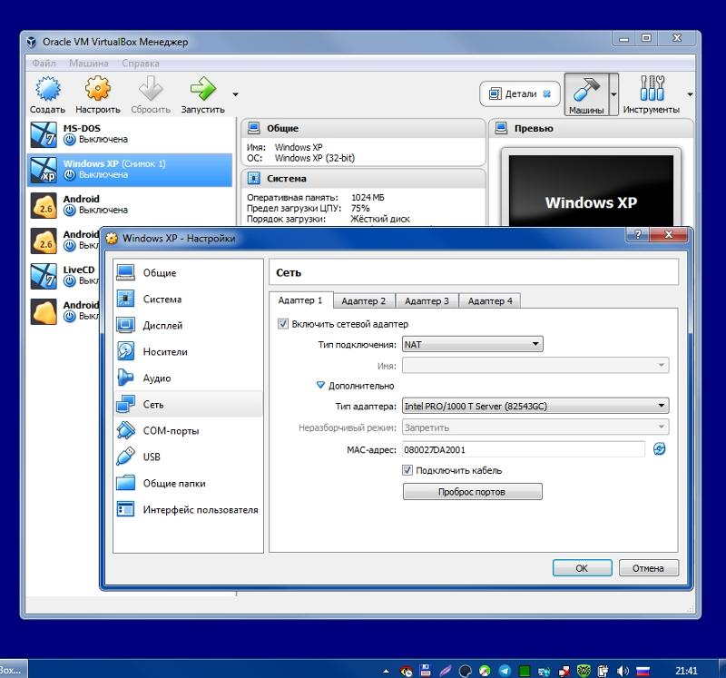
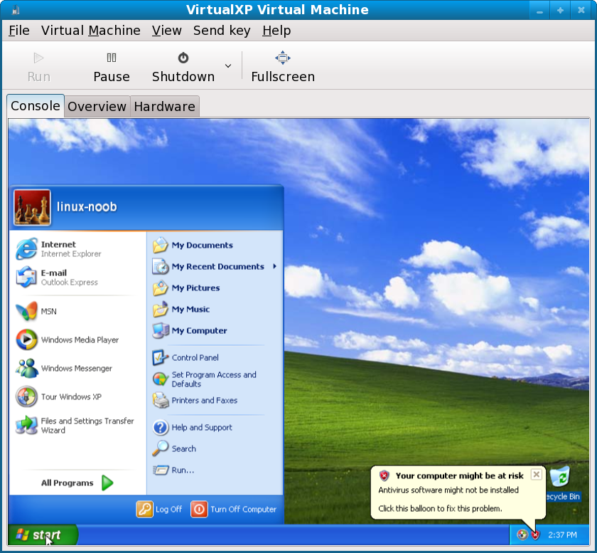

<!DOCTYPE html>
<html lang="en">
<head>
    <meta charset="UTF-8">
    <meta http-equiv="X-UA-Compatible" content="IE=edge">
    <meta name="viewport" content="width=device-width, initial-scale=1.0">
    <meta name="viewport" content='width=1000'/>
    <link rel="stylesheet" href="style.css">
    <link rel="shortcut icon" href="images/logo2.svg" type="image/x-icon">
    <title>ПР №1</title>
</head>
<body>
    <header class="header">
        <div class="logoper">
            <span class="logo"></span>
            <span class="oper"><h1 class="osis">Операционные системы и среды</h1></span>
        </div>
        <div class="cont">
            <nav class="nav">
                <ul class="menu">
                    <li class="menu-title">
                        <a class="menu-link" href="index.html">Главная</a>
                    </li>
                    <li class="menu-title">
                        <a class="menu-link" href="teoriya.html">Теория</a>
                    </li>
                    <li class="menu-title">
                        <a class="menu-link" href="praktika.html">Практика</a>
                    </li>
                    <li class="menu-title">
                        <a class="menu-link" href="uchebniki.html">Учебники</a>
                    </li>
                    <li class="menu-title">
                        <a class="menu-link" href="testi.html">Тесты</a>
                    </li>
                    <li class="menu-title">
                        <a class="menu-link" href="voprosi.html">Вопросы и ответы</a>
                    </li>
                </ul>
            </nav>
        </div>
    </header>
<div class="osnova9">
    <p class="uvazh"><b>Практическая работа №1</b></p>
    <br>
    <p class="uvazh"><b>Тема: Установка операционной системы Windows XP(Vista) c помощью эмулятора</b></p>
        <br>
        <div class="line"></div>
        <br>
    <p class="tekst">Цели работы:</p>
    <ol class="numer">
        <li>Познакомиться с основными эмуляторами</li>
        <li>Изучить работу виртуальной машины на примере VirtualBox</li>
        <li>Научиться устанавливать операционную систему Windows с помощью эмулятора.</li>
    </ol>
    <h4 class="zagolovok">Краткая теория</h4>
        <p class="tekst">Обзор существующих настольных платформ виртуализации</p>
        <p class="tekst">Так уж сложилось, что в индустрии платформ виртуализации пользователи привыкли к традиционным продуктам, которые развиваются уже на протяжении нескольких лет и предоставляют  необходимый уровень функциональности. Однако, лидер в области производства ПО для виртуализации, компания VMware, ориентируется в основном на коммерческое использование своих платформ, и хотя ее мощная платформа виртуализации VMware Workstation 6 является по множеству параметров лучшей на данный момент, у нее есть один неоспоримый минус – она не бесплатна. Пользователи могут также загрузить с сайта бесплатный продукт VMware Player, предназначенный для «проигрывания» виртуальных машин, однако создавать их в нем нельзя. Продукт VMware Server направлен на использование в корпоративной среде для виртуализации серверов малых предприятий и тоже не подходит для домашних пользователей.</p>
        <p class="tekst">Компания Microsoft предлагает пользователям бесплатный продукт Virtual PC, который, однако, не 
            обладает необходимым функционалом, удовлетворяющим все категории пользователей. Нужно также 
            отметить, что Virtual PC доступен только для рабочих станций с операционными системами семейства 
            Windows, что также отсекает определенный сегмент пользователей.</p>
        <p class="tekst">Компания Parallels также предлагает настольные платформы виртуализации Parallels Workstation для 
            Windows и Linux хостов, а также Parallels Desktop для Mac OS X, которые тоже не являются 
            бесплатными. К тому же, в связи с успешными продажами продукта Parallels Desktop, компания 
            Parallels, принадлежащая, кстати, российской компании SWsoft, несколько приостановила развитие 
            продукта Parallels Workstation и уже довольно давно не выпускала его новых версий.</p>
    <h4 class="zagolovok">Принцип работы VirtualBox</h4>
        <p class="tekst">Графический интерфейс VirtualBox имеет два основных окна: главное и консоль виртуальной машины.</p>
            <div class="kart-block">
                
                
            </div>
        <p class="tekst">При старте виртуальной машины VirtualBox обычно запускается три процесса, которые можно 
            наблюдать в диспетчере задач в Windows-системах или системном мониторе Linux: ol> </p>
    <h4 class="zagolovok">Создаем виртуальную машину</h4>
        <p class="tekst">Методика создания и настройки новой виртуальной машины проста. Рассмотрим кратко — в 
            детали вдаваться не станем. Во- первых, выбираем клавишу Создать в основном меню. Откроется 
            пошаговый мастер создания машины. следуем его инструкциям: выбираем тип устанавливаемой ОС, 
            создаем новый виртуальный жесткий диск, указываем нужное количество оперативной памяти. Далее 
            выбираем в основном меню VirtualBox вышеуказанный пункт Свойства и настраиваем эмулируемое 
            железо: выбираем размер видеопамяти (возможно, до 128 Мб), подключаем виртуальный жесткий 
            диск (если нужно), floppy-дисковод, CD/DVD-привод (выбирается из реально существующих) или 
            ISO-образ диска.</p>
        <p class="tekst">Затем настраиваем аудиоадаптер (в меню обязательно выбираем Windows DirectSound — в 
            противном случае звука в нашей виртуальной машине не будет), настраиваем сеть и включаем USBконтроллер (позже можете самостоятельно поэкспериментировать с фильтрами USB-устройств). 
            Далее назначаем расширенные папки (общие для виртуальной и реальной машины) и, если нужно, 
            активируем сервер удаленного рабочего стола (позволяет удаленным клиентам соединяться и 
            использовать виртуальную
            машину с помощью стандартного RDP-клиента).</p>
        <p class="tekst">Процесс установки ОС на виртуальную машину, по сути, ничем не отличается от установки на 
            реальный ПК. Сперва форматируем виртуальный жесткий диск и создаем основной раздел, делаем его 
            загрузочным (проще всего с помощью обычной загрузочной дискеты для Windows 98 — для этого 
            используются стандартные DOS-команды FDISK, Format X: (где X — виртуальный жесткий диск), 
            SYS X: и т.д.). Далее все как в реальной жизни: вставляем загрузочный диск с нужной ОС в 
            оптический привод и перезагружаем виртуальную машину. </p>
        <p class="tekst">Внимание! В меню основного окна настроек VirtualBox Общие -> Дополнительно обязательно 
            включите опцию IO APIC и установите нужный порядок загрузки гостевой ОС с конкретного 
            носителя информации. По умолчанию стоит Floppy Disk -> CD/DVD -> Виртуальный жесткий диск. К 
            сожалению, загрузка с USB-устройства невозможна, зато возможна загрузка по сети. </p>
        <p class="tekst">После этапа форматирования жесткого диска пункт Floppy в загрузке можно вообще 
            деактивировать. Таким образом, сразу после перезагрузки с оптического диска сразу же должна 
            запуститься программа- инсталлятор нужной вам операционной системы. Остается лишь следовать 
            мудрым наставлениям инсталлятора, дождаться окончания установки и активировать вашу копию ОС. </p>
    <h4 class="zagolovok">Порядок выполнения работы</h4>
        <ol class="numer">
            <li>Изучите краткую теория и ответьте на контрольные вопросы</li>
            <li>Установите VirtualBox.</li>
            <li>Создайте виртуальную машину.</li>
            <li>Задайте основные её компоненты(жёсткий диск, ОЗУ, и другие)</li>
            <li>Установите все необходимые элементы.(адаптер, видеокарта, дисководы)</li>
            <li>Установите операционную систему Windows XP(Vista)</li>
            <li>Установите обновления</li>
            <li>Выполните настройки установленной операционной системы</li>
            <li>Оформите отчёт и сделайте выводы.</li>
        </ol>
</div>
<footer class="footer">
    <div class="table">
        <table>
            <tr>
                <th>Теория</th>
                <th>Практика</th>
                <th>Учебники</th>
                <th>Тесты</th>
                <th>Вопросы и ответы</th>
            </tr>
            <tr>
                <td><a class="menu-link2" href="vvedenie.html">Введение в ОС</a></td>
                <td><a class="menu-link2" href="pr1.html">Установка ОС Windows XP</a></td>
                <td><a class="menu-link2" href="uchebniki.html">Перейти к разделу</a></td>
                <td><a class="menu-link2" href="test1.html">Тест 1</a></td>
                <td><a class="menu-link2" href="voprosi.html">Перейти к разделу</a></td>
            </tr>
            <tr>
                <td><a class="menu-link2" href="struktura.html">Структура ОС</a></td>
                <td><a class="menu-link2" href="pr2.html">Работа с командами ОС Windows XP</a></td>
                <td></td>
                <td><a class="menu-link2" href="test2.html">Тест 2</a></td>
                <td></td>
            </tr>
            <tr>
                <td><a class="menu-link2" href="planir.html">Планировщик</a></td>
                <td><a class="menu-link2" href="pr3.html">Дефрагментация жёсткого диска</a></td>
                <td></td>
                <td><a class="menu-link2" href="test3.html">Тест 3</a></td>
                <td></td>
            </tr>
            <tr>
                <td><a class="menu-link2" href="virtual.html">Виртуальная файловая система</a></td>
                <td><a class="menu-link2" href="pr4.html">Управление процессами</a></td>
                <td></td>
                <td><a class="menu-link2" href="test4.html">Тест 4</a></td>
                <td></td>
            </tr>
            <tr>
                <td><a class="menu-link2" href="podsistema.html">Сетевая подсистема</a></td>
                <td><a class="menu-link2" href="pr5.html">Работа с архиваторами</a></td>
                <td></td>
                <td><a class="menu-link2" href="test5.html">Тест 5</a></td>
                <td></td>
            </tr>
        </table>
    </div>
    <br>
    <div class="logo_footer">
        
    </div>
    <div class="ivan">© Иван "kosmodream" Сидоров, 2023</div>
    <div class="ivan2">
        <a href="https://vk.com/kosmodream_exe" target="_blank"></a>
        <a href="https://t.me/adskiy_razgon459" target="_blank"></a>
        <a href="tel:+79192702413"></a>
    </div>
</footer>
</body>
</html>